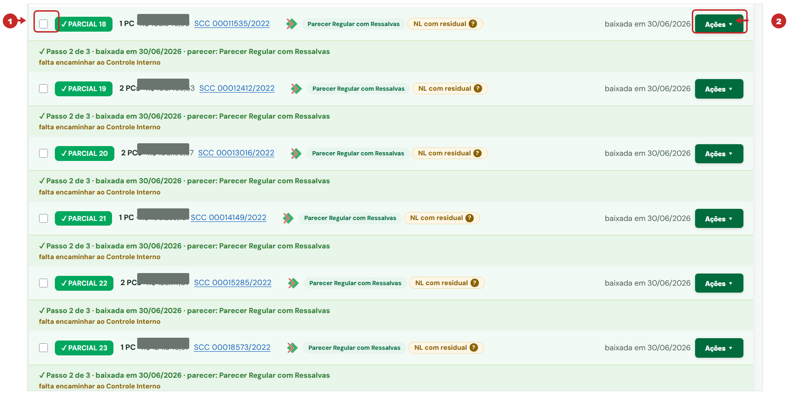
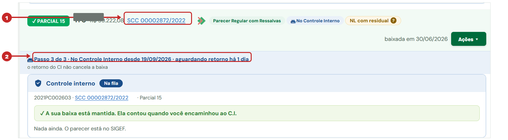

As cinco perguntas que mais chegam, respondidas com o caminho na tela — passo a passo.
Antes de tudo, a régua do sistema. Cada parcial percorre três passos, e a tela sempre
diz em qual deles ela está:
Passo 1 — analisar e registrar o parecer.
Passo 2 — encaminhar ao Controle Interno. A sua baixa já contou aqui, e não se desfaz.
Passo 3 — o C.I. devolve, e a parcial arquiva.
O que acontece no SGPe e no SIGEF não chega sozinho ao sistema. Se a parcial
já foi ao C.I. por lá, aqui ela continua no passo 2 até alguém registrar — e é por isso que
aparecem juntas dezenas de parciais "faltando encaminhar".
1. "Já analisei tudo, mas o sistema diz que falta encaminhar ao Controle Interno"
"Essas PCs já foram analisadas e estão arquivadas no SGPe e com o parecer anexado ao
SIGEF. Entretanto, manualmente, não consigo colocar essa situação no sistema."
A parcial está no passo 2 de 3: baixada, com parecer, e ainda não encaminhada ao C.I.
aqui dentro. Enquanto isso não for feito, ela não chega ao arquivamento — mesmo que no SGPe
o caminho já tenha sido percorrido.
E não precisa ser uma a uma. Dá para marcar várias e encaminhar todas juntas:
1
Na Minha Planilha, abra a TR e marque a caixinha à esquerda de cada parcial que está
no passo 2. Elas precisam ser da mesma TR.
2
Para uma só, o caminho também existe no menu Ações ▾ da linha → Encaminhar ao C.I.

As caixinhas só aparecem nas parciais que podem ser encaminhadas — as que estão
no passo 2. Os valores estão cobertos nesta imagem de exemplo.
3
Conforme você marca, aparece uma barra azul no rodapé com a contagem. Clique em
"🏛 Encaminhar as N ao C.I.", confira a lista na confirmação e confirme.
A sua baixa não é desfeita. Ela contou quando você encaminhou ao C.I., e o
retorno do C.I. também não a cancela. O encaminhamento leva a parcial inteira, não só a PC que
você está vendo.
Se o C.I. já se manifestou fora do sistema — parecer no SIGEF e processo já
tramitado —, encaminhe assim mesmo e avise o Controle Interno: eles registram a devolutiva e a
parcial vai direto para "pronta para arquivar". É o registro que falta, não a análise.
2. "Está na fila do Controle Interno e não sai de lá"
A parcial mostra Passo 3 de 3 · No Controle Interno e a etiqueta azul
"Na fila".
Isso quer dizer que o encaminhamento foi feito e o C.I. ainda não registrou a devolutiva
no sistema. Não há nada para você fazer na tela: quem destrava é o Controle Interno.

O 2 mostra onde a tela diz há quantos dias a parcial está esperando.
O que você pode fazer: se o C.I. já devolveu pelo SGPe e o parecer está no
SIGEF, avise a equipe do Controle Interno com o número da TR e da parcial. O registro deles é o que
libera o arquivamento aqui.
3. "Não consigo arquivar, e a faixa fala em Controle Interno"
"A parcial 32 ainda está sendo analisada pelo Controle Interno."
Desde 23/09 a parcial não arquiva enquanto o processo estiver, no SGPe, dentro do Controle
Interno — mesmo que a tela já mostre o acordo do C.I. Antes disso o sistema deixava arquivar, e
isso encerrava a parcial antes de o C.I. devolver.
A faixa diz o setor, desde quando, e a hora da última leitura do SGPe.
1
Confira no SGPe se o C.I. já encaminhou o processo
para outro setor — o número do processo, na faixa, é link.
2
Clique em "Consultar o SGPe agora". O sistema
lê a posição do processo na hora, sem esperar a leitura automática.
3
Se já saiu do C.I., a faixa confirma o setor e o
botão de arquivar libera ali mesmo.
Quando já saiu, a tela avisa — você não precisa abrir o SGPe para descobrir.
4. "O número do processo SGPe está errado"
"A vinculação do processo está errada; o correto é outro número."
O número do processo tem um lápis ao lado, em todas as telas em que ele aparece. Clique
nele, corrija sigla, número e ano, e salve — o sistema busca o link do SGPe sozinho.
O que mudou em 27/09, e é importante: a correção agora vale só para a
parcial em que você está. Quando o mesmo número estiver em outras parciais da mesma TR, o
modal avisa quais são e deixa você escolher entre corrigir só a sua ou todas. Antes, corrigir uma
mudava todas as que tinham aquele número — era o defeito relatado.
Processo mãe é diferente: ele é um por TR, então corrigir a mãe vale
para a TR inteira. A tela diz isso no próprio modal.
5. A PC final
A final arquiva por último, e o sistema pede duas coisas:
todas as parciais já arquivadas;
a data da baixa do Secretário no SIGEF, que você digita na hora de arquivar.
Na final, o aviso da data do Secretário aparece antes do clique.
Com a final arquivada, a TR está encerrada.
Em uma linha cada
Faltou encaminhar ao C.I.? Marque as caixinhas e use a barra azul do rodapé.
Na fila do C.I.? Aguarde o registro do Controle Interno — e avise-os se já devolveram por fora.
Faixa vermelha do C.I.? "Consultar o SGPe agora" e, se saiu, arquive.
Número errado? Lápis — e repare na pergunta sobre as outras parciais.
Final? Só depois de todas as parciais, com a data do Secretário.
Ficou alguma situação fora destas? Escreva com TR, parcial e o que a tela mostra —
é o suficiente para eu conferir o caso no sistema.
SIGPC-GT · Grupo de Trabalho de Prestação de Contas — FCEE · setembro de 2026